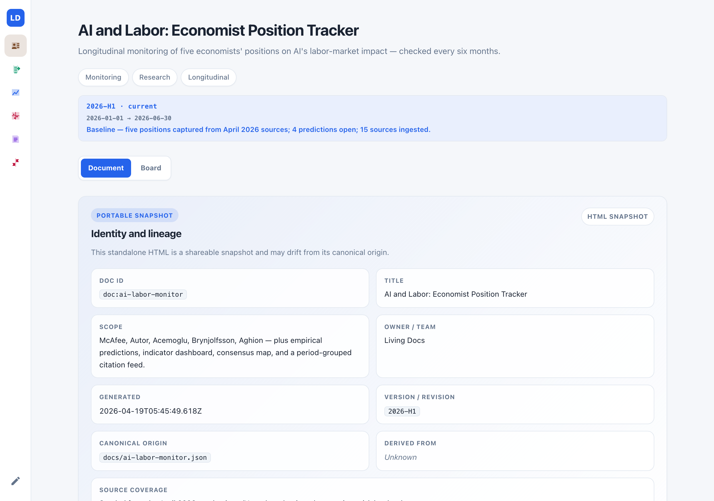
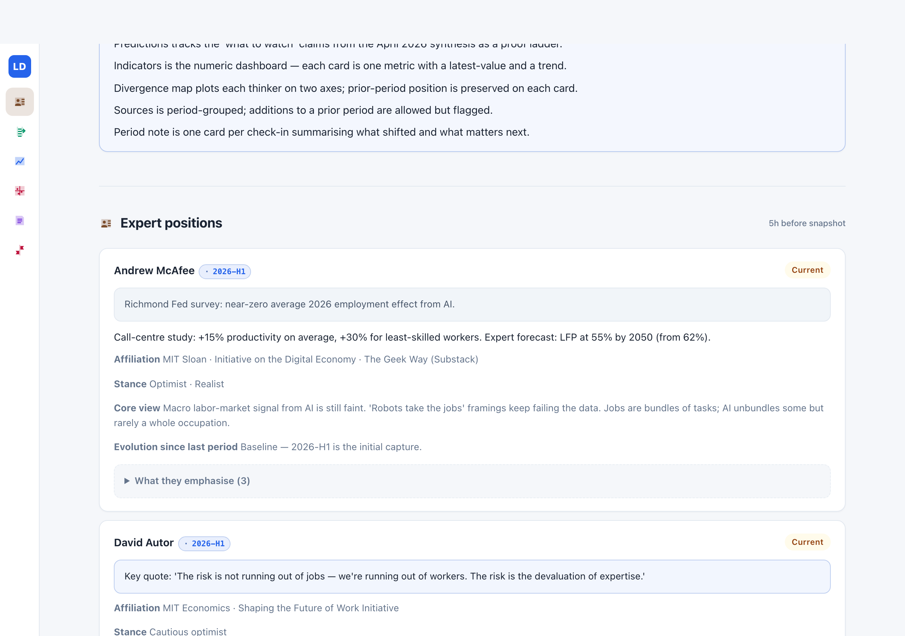
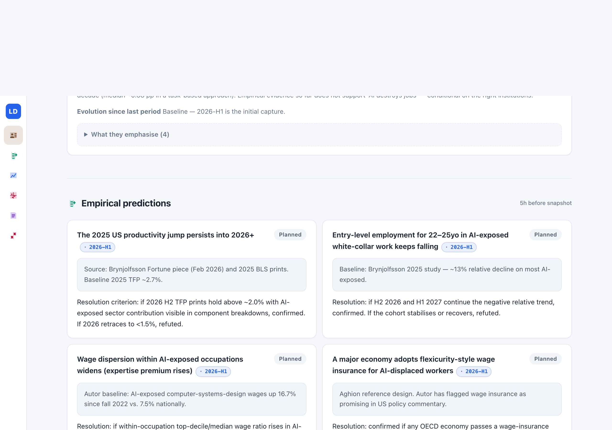
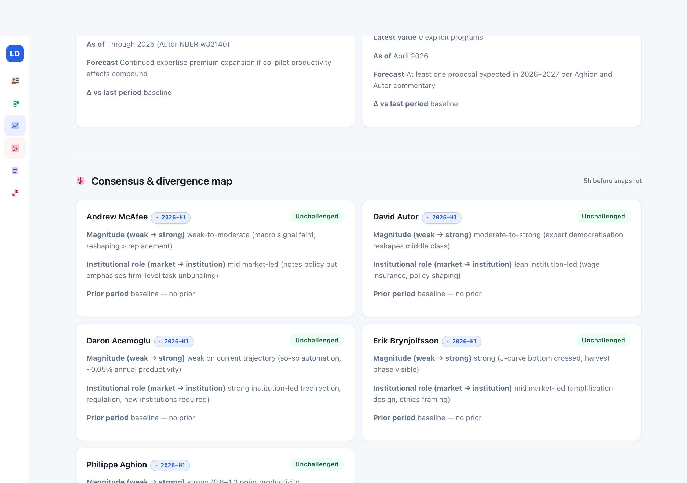
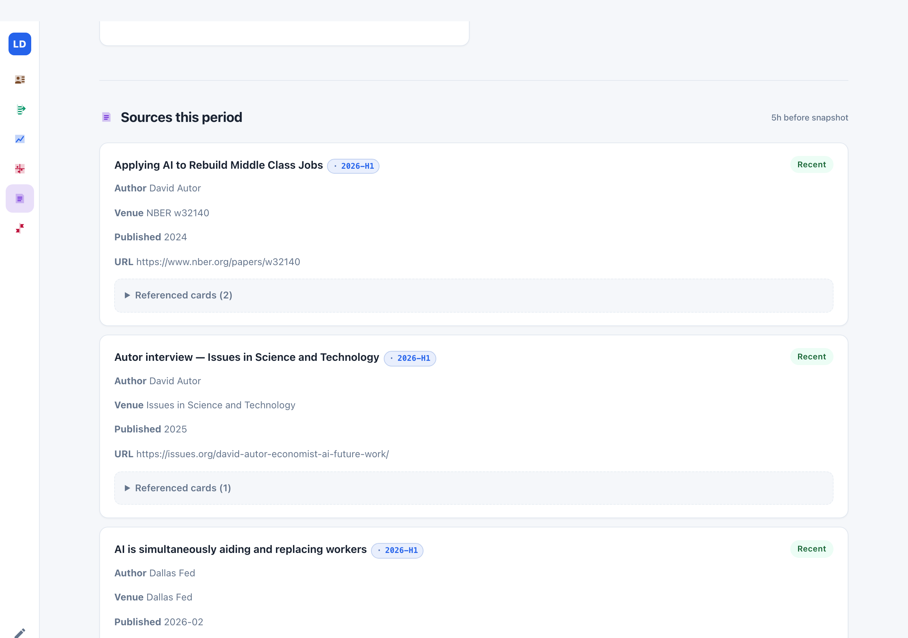
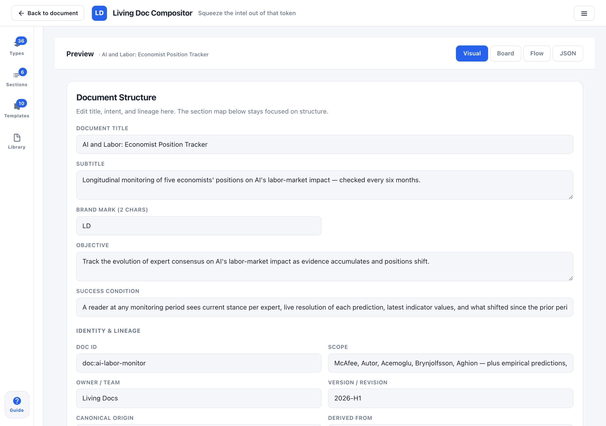

A few months ago I was trying to hold a real view on AI and labor — not a vibe, a view I could defend and eventually put a number on. I had read McAfee's latest, and Autor's NBER paper, and an Acemoglu interview, and a Brynjolfsson Fortune piece. For about a week I felt informed. Then a new paper dropped. I couldn't remember whether it contradicted Autor or extended him. I checked Polymarket on a related outcome sitting at 62% and couldn't tell whether I disagreed with the market or had just forgotten what I used to think. The information was all still out there. I had just lost the thread.
This is what trying to stay current on a moving topic looks like for most of us. You read the substantial takes when they land. You bookmark the occasional synthesis. You mean to come back. Then six months go by and you're doing archaeology — re-reading threads, re-opening papers, re-discovering who said what — to reconstruct a picture you briefly had. Every check-in starts from scratch.
The stakes on this got higher recently, and not in a subtle way. Polymarket has become a real market for policy and macro questions. Kalshi is growing. Manifold and Metaculus have turned debates into price curves. You don't just have opinions about where AI-and-labor is going anymore — you have a probability, the market shows you the crowd's probability, and the difference between your number and theirs is where the money is. Even if you never place a bet, the prediction-market habit of mind has leaked in. Who's credible? What's their current number? What did they say six months ago? What would change your mind?
The existing tools don't help. Substack gives you the latest take and buries the prior one. Papers stack in your reader. Twitter is noise. The smart synthesis from last year is already stale — and rewriting it from scratch every six months is exactly the work the format is supposed to save you.
What I wanted was one page per topic. A single HTML file I could open, scan, close, and come back to six months later — where the page had changed in a way that showed me what moved. Not another feed. Not another dashboard. A running picture.
I built one for AI and labor. The rest of this piece walks through how it actually works — what you see when you open it, what happens at the six-month mark, and honestly what it takes to keep it current. At the end there's a link to download it.
What the page looks like when you open it
You open the rendered HTML in any browser. There's no login, no account, no backend. The page fits in one file.

The blue strip under the pills is the thing that makes this a running picture rather than a snapshot. Each monitoring period is a row: the ID (2026-H1), the window it covers, and a one-line summary of what that period captured. Today there's one entry because it's the baseline. In six months there'll be two. In two years there'll be four, and the strip will be where you glance first to see which cards moved in the current check-in.
Scroll past the snapshot metadata and you hit the first real section: the five economists I'm tracking.

Each expert card is the same shape: name, affiliation, a stance badge on the right, a one-paragraph core view written in plain language, a stance label line (Optimist, Skeptic, J-curve optimist), and the crucial evolution since last period field. At baseline that field says "no prior." After one check-in it says something like "softened on the TFP floor after October 2026 NBER paper." The little 2026-H1 chip next to each name tells you when this card last moved — so at a glance you see what's fresh.
Below the experts, a predictions ladder. Four "what to watch" claims from the April 2026 synthesis, each framed as a resolvable proposition:

Each prediction carries a resolution criterion in prose: if 2026 H2 TFP prints hold above ~2.0% with AI-exposed sector contribution visible, confirmed. If 2026 retraces to <1.5%, refuted. That line is how the rung will resolve, written in advance so the resolution isn't retrofitted.
Below the predictions, a numeric indicator dashboard (US TFP growth, 22–25yo employment in AI-exposed work, wage premium in the AI-exposed CS sector, OECD flexicurity adoption count), then the consensus-and-divergence map:

And a citation feed at the bottom — fifteen sources that ground the April 2026 baseline, grouped under 2026-H1:

That's the baseline. Five experts. Four predictions. Four indicators. Five map positions. Fifteen citations. One period note at the end saying "baseline — focus for next period: watch 2026 H1 TFP prints, cohort employment data, and any flexicurity proposals."
If you want to see the whole thing at once rather than scrolling section by section, the compositor has a Body-flow view that lays every section onto a single canvas:
And because this kind of doc lives or dies on whether its own rules stay honest, there's a Governance view that shows the structural contract visually — facets on the left, sections in the middle, invariants on the right, with typed wires connecting them:
This is the view I look at when I'm worried the tracker has drifted. If a facet has no coverage edge, I know a part of the objective isn't being carried by any section. If an invariant points at nothing, its rule is declared but dead. The structural guarantees aren't prose at the top of the doc; they're a canvas you can inspect.
If I'd written this as a synthesis post and stopped there, it would already be stale by October. Here's what happens instead.
Coming back in six months
Now the mechanism. Six months pass. A few things happened in the world: new papers landed, indicators printed, Acemoglu maybe softened his TFP estimate in an October op-ed. You open the same file.
You click the pencil icon in the left sidebar of the page. The compositor opens on top of the doc — it's embedded in every rendered tracker, no separate install:

From here, there are two paths. Which one you take depends on whether you have Claude Code installed on your machine.
Path A: you have Claude Code. Run /ai-labor-sync 2026-H2. The skill walks each expert's publication feed for the period window — Substacks, NBER, Project Syndicate, Brookings, Fed working papers, major interview outlets — filtered to July through December. It notices stance shifts. It proposes evolution notes grounded in specific sources. It flags indicators whose latest prints have been released. It proposes resolution transitions on prediction rungs where new evidence landed. What it returns is a proposed diff, not edits. You open the diff in the compositor, review each change one at a time, accept what you believe, decline what you don't, and apply. Nothing mutates silently.
Path B: you don't have Claude Code. You do the archaeology yourself. Same compositor, same fields. You open each expert's card, read their recent output, update the evolution since last period field, bump the stance if it shifted, add any new citations to the sources section, update indicators that have fresh prints. It takes an afternoon once a half-year, instead of the scattered re-reading you'd otherwise do. The page is scoped: you know which fields to fill in, and you know when you're done because the doc tells you (if a card is stale, its period chip still says 2026-H1 when the current period is 2026-H2).
Either way, when you're done, you save. The compositor's Export button produces a fresh HTML file (and the JSON alongside, if you want it). That file is now your tracker at period 2026-H2. Drop it back wherever you keep it — a local folder, Drive, Dropbox, a private gist. There's no server to deploy to, no account to log into, no backend to maintain. One file. Works offline.
When you open the page after the check-in, the period strip shows two entries now — 2026-H1 as the prior period and 2026-H2 as current. Cards that moved carry the 2026-H2 chip. The ones that didn't still read 2026-H1, which is its own signal: nothing meaningful happened to them this period. The evolution field on Acemoglu's card now has two paragraphs instead of one. The TFP indicator has a new latestValue and a delta. The divergence map shows Acemoglu's prior position as a text line under his new one. The period note summarises what shifted. Then at the bottom, the focus for 2026-H2 that you wrote six months ago is still there, so future-you can see what past-you was watching for.
You close the page. Another six months go by. You come back and do it again.
What this actually gives you
After two or three periods, the tracker stops being a snapshot and starts being an accumulated picture. Acemoglu's evolution field is now three paragraphs of "here's how his position has shifted since we started watching." The predictions ladder has some rungs confirmed, some refuted, some still open — and you can see which way the evidence has been going. The divergence map has ghosts: each thinker's prior position visible next to their current one, so movement is obvious. The citation feed is grouped by period, which means a reader from 2027 can see exactly when a source entered the conversation.
This is the thing I didn't have before. Not more information — the information was always there. A surface that holds your running picture of a topic and updates with what moved. When I need to form a view now — for a piece I'm writing, for a Polymarket bet, for a meeting where someone's going to ask what I think — I open the tracker. I see where each credible voice currently stands, what's been confirmed, what's pending, and what shifted since I last paid attention. I don't re-derive it from scratch.
The hard work was never "reading the things." It was "keeping a coherent picture of the topic across time." That's the part the page does.
Fork it for what you actually watch
The AI-and-labor tracker isn't special. What's special is the shape: five tracked voices, four predictions, a few indicators, a map, a citation feed, a period note. You can swap the content for any topic whose state shifts with new evidence.
If you follow macro, the voices become Dalio, Druckenmiller, El-Erian, Ferguson; the predictions are about rates and credit; the indicators are yield curve, spreads, dollar index; the map axes are hawkish-dovish and growth-stagflation. If you follow AI safety, the voices are specific researchers; the predictions are about capabilities benchmarks; the indicators are compute and red-team outcomes. If you watch a policy debate for work, the voices are named policymakers; the predictions are about passage; the indicators are vote counts and polling. The shape carries.
To start: open the AI-and-labor tracker, click the pencil, and fork the doc. Rename it, change the title and objective, swap the five experts for the voices you actually follow, rewrite the predictions into the questions you want to watch resolve, keep or drop the indicator and map sections. Export. Save somewhere you'll find it in six months.
Or start from a cleaner slate — the blank monitoring template opens in the same compositor with the shape pre-scaffolded and the fields labelled but empty:
From here it's the same loop as above: fill in your five voices, write your predictions, pick your indicators, export, save.
Working tracker: AI and Labor: Economist Position Tracker. Opens in any browser. Click the pencil icon in the sidebar to fork it in place.
Blank template: Monitoring Tracker template. Same shape, placeholder cards, ready to be pointed at your topic.
Both are MIT-licensed static HTML. No backend, no accounts, no tracking. You own the file you produce.
One honest note on dependencies
The tracker itself has none. It's a static HTML file that works in any browser. The compositor is embedded; clicking the pencil icon opens it inline. You can fork, edit, and export entirely in your browser.
The /ai-labor-sync skill — the thing that does the automated archaeology every six months — requires Claude Code installed locally. That's a real prerequisite, and I've been honest about it above. Without Claude Code, the tracker still works: you do the scan yourself at each check-in, same compositor, same fields, just manual. The skill makes the six-month update cheaper when you have it. It's not required for the tracker to be useful.
That tradeoff is the whole premise. Keeping up used to be two jobs stacked: the mechanical archaeology of finding what's new, and the judgment of deciding what it means. Collapsing both onto a human is why we all bounce off "staying current" eventually. Splitting them — a skill does the scan, a human does the ratification — is what makes the loop sustainable. And for topics you care about enough to bet on, that loop is what you wanted all along.